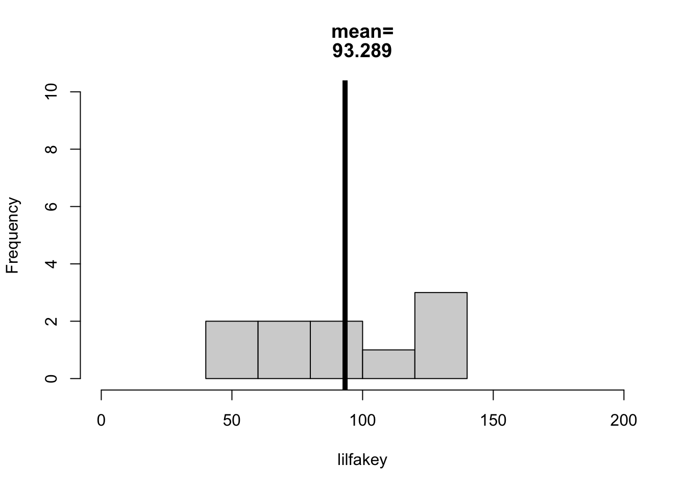

What’s the shape of this distribution? What does this shape tell you?
What would you consider to be an outlier in the distribution? Why?
d <-read.csv("../datasets/Protestant Work Ethic/data.csv", sep ="\t")hist(d$Q1E, breaks =100, main ="RT for Answering Q1",xlab ="Response Time (RT) in ms",col ='black', bor ='white')
Goal : understand why and how the normal distribution is “normal”; focus more on understanding the mean as a prediction of this distribution vs. a prediction of the population, and learn one method of estimating how well the mean describes the population.
Average the items into one variable; graph & describe.
selfes$SELFES <-rowMeans(SELFES.DF, na.rm = T) # creating the scalehist(selfes$SELFES, col ='black', bor ='white', # the graphmain ="Histogram of Self-Esteem", xlab ="Self-Esteem Score", breaks =15)
SST/length(residuals) # average of squared residuals (variance)
[1] 0.4877935
sqrt(SST/length(residuals)) # average of residuals, unsquared (standard deviation)
[1] 0.6984221
sd(selfes$SELFES, na.rm = T) #
[1] 0.6987572
The “Normal” Distribution
When do we see a “normal” distribution?
When “life is complex” (multiple influences on an outcome.)
That complexity is independent.
Discussion : Why is this variable almost Normal?
What are the multiple & independent influences on people’s self-esteem?
cultural values
social environment (community)
other personality factors
life experiences (bullied; you were the bully and feel AWESOME about it;
physiological factors
mental health
you rich (not broke & struggling)
family
What are some of the non-independent influences on people’s self-esteem (that might make this not perfectly normal?)
all AMERICAN and in our CULTURE we VALUE self-esteem
people with lower self-esteem may be less likely to take the survey (sampling bias)
hist(selfes$SELFES, col ='black', bor ='white')
mean(selfes$SELFES, na.rm = T)
[1] 2.629648
Activity : Let’s simulate a normal distribution in R
Goal : define an object called “life” that simulates what 1000 people’s lives look like, if each life is the summation of 10 random coin flips (heads = 0, tails = 1).
Code you will need :
coinflip <- c(0,1) # defining a coin-flip.
sample(x, n) # randomly sample from x n times
replicate(n, expr) # to repeat an expression n times
for(){} # our good friend the foor loop.
Professor Code Goes Here.
coinflip <-c(0,1)coinflip
[1] 0 1
sample(1:10, 1)
[1] 3
sample(coinflip, 1)
[1] 0
life <-array()x <-replicate(10, sample(coinflip, 1))sum(x)
[1] 7
life[3] <-sum(x)life
[1] NA NA 7
life <-array() # WHAT HAPPENS IF I DO THIS????for(i inc(1:1000)){ x <-replicate(10, sample(coinflip, 1)) life[i] <-sum(x)}life
Modify the code to simulate 1000 coin flips where there’s a 80% chance of flipping one option (i.e., increase the probability of flipping either heads = 0 or tails = 1).
What type of distribution do you expect to see? Why??
Note : the sample() function can take another argument (prob) that can adjust the probability.
sample(coinflip, 1)
[1] 1
badlife <-array() # WHAT HAPPENS IF I DO THIS????for(i inc(1:1000)){ x <-replicate(10, sample(coinflip, 1, prob =c(.7, .3))) badlife[i] <-sum(x)}badlife
Francis Galton was a super racist and inventor of eugenics, and influenced (or invented) many statistics that we use today. For example, he defined the “central limit theorem” with the Galton Board (see image on the right). Whereas before, scholars considered the “average” to be the ideal state of humanity (it is closest to all the people; the Platonic Ideal!), Galton considered the goal of humanity to achieve to be better than average - something we have internalized today.
Indeed, Galton had a motivated agenda to use statistics to demonstrate there was a hierarchy to individual “eminence.” In his own words:
To conclude, the range of mental power between—I will not say the highest Caucasian and the lowest savage—but between the greatest and least of English intellects, is enormous. … I propose in this chapter to range men according to their natural abilities, putting them into classes separated by equal degrees of merit, and to show the relative number of individuals included in the several classes…..The method I shall employ for discovering all this, is an application of the very curious theoretical law of “deviation from an average.” First, I will explain the law, and then I will show that the production of natural intellectual gifts comes justly within its scope. - Galton, Hereditary Genius (1869). Linked here.
Why does it matter that a super racist invented statistics? Does it? I have a few ideas, but would like to hear your thoughts first :)
reasons relevant :
angela : important to acknowledge that the author was super racist; possible theories that we have are not the most objective…they are products of a tool that was developed for a specific purpose (ranking men).
kevin : good reminder to not just adopt the “best fit”; the “mean” as “the best”…outliers are also humans too, and maybe different for important reasons; maybe even more important to study these people who don’t fit our models.
reasons not relevant:
this is a great way to measure people; quantify; predict.
hannah : lots of things that we use in society that don’t come from the best intentions - important to remember that history - but we still need to use them and not worth throwing out the tools because they have a purpose.
questions / other comments :
namrata : can we separate the intention of creation from the practice of creation? is statistics in some way inherently biased????
angela : galton reveals his bias in his language (“Caucaisan…savage”)
Check in with your buddy….what’s going on??? What are we doing and why are we doing this????
WHAT WE ARE DOING :
fakey : an object : a fake dataset of 10million values with a mean of 100 and sd of 30.
sample() : taking 10 random participant IDs….making sure they are valid IDs (within the possible range of fakey)
indexing [] : using the 10 random IDs to find 10 random people in fakey
result : getting ten random values from these imaginary people that we created as a population.
WHY ARE WE DOING THIS??? : to try and see how much the statistics from our RANDOM SAMPLE will vary from our population.
Run some stats on this sample.
mean(lilfakey)
[1] 93.37252
hist(lilfakey)abline(v =mean(lilfakey), lwd =5)
Repeat These Steps Until You Get “THE TRUTH”
lilfakey <- fakey[sample(1:length(fakey), 10)] # ten random individuals from fakey.hist(lilfakey, xlim =c(0,200), ylim =c(0,10),breaks =5,main =paste(c("mean=", round(mean(lilfakey), 4)), sep =""))abline(v =mean(lilfakey), lwd =5)

WHAT DID Y’ALL NOTICE :
sampling error :
we NEVER got the mean we were supposed to get (100).
we NEVER got the same mean with each sample (lack of RELIABILITY in our results)
our means weren’t ALL over the place…
they were always within our SD
they were all kinda around 100.
no pattern / bias to where the means were.
Doing this 1000 times
truthbucket <-array()for(i inc(1:1000)){ lilfakey <- fakey[sample(1:length(fakey), 10)] # ten random individuals from fakey. truthbucket[i] <-mean(lilfakey) }length(truthbucket)
[1] 1000
hist(truthbucket)
mean(truthbucket)
[1] 99.65602
What’s the Point, Professor??? (Sampling Error Edition)
Bootstrapping to Estimate Sampling Error
Okay, let’s work through a real example of using bootstrapping to estimate sampling error, and why this might be useful.
Remember that in the onboarding survey, we saw people rated their own skills as lower than their classmates’ skills.
d <-read.csv("../datasets/Onboarding Data/honor_onboard_FA25.csv", stringsAsFactors = T, na.strings ="")par(mfrow =c(1,2))hist(d$self.skills, breaks =c(0:5), col ='black', bor ='white', main ="Computer Skills\n(Self-Perceptions)")hist(d$class.skills, breaks =c(0:5),col ='black', bor ='white', main ="Computer Skills\n(Perceptions of Classmates)")
But would we expect to observe this same difference in a different sample of students???
Let’s use bootstrapping to test this.
For Lab 3 :
Keep getting practice working with datasets and interpreting variables in R.
Try using Quarto.
Use (and adapt) the bootstrapping for-loop to estimate how much sampling error we can expect in variables, and in the difference between variables.